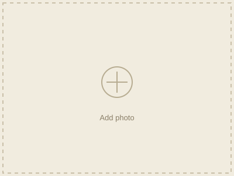
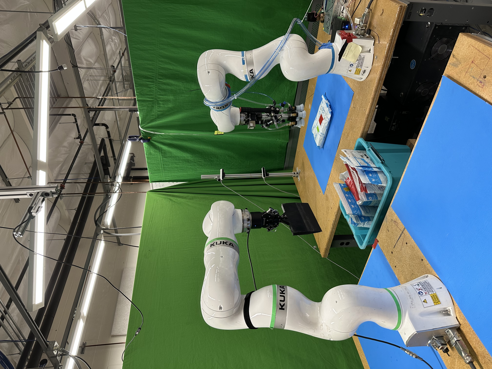
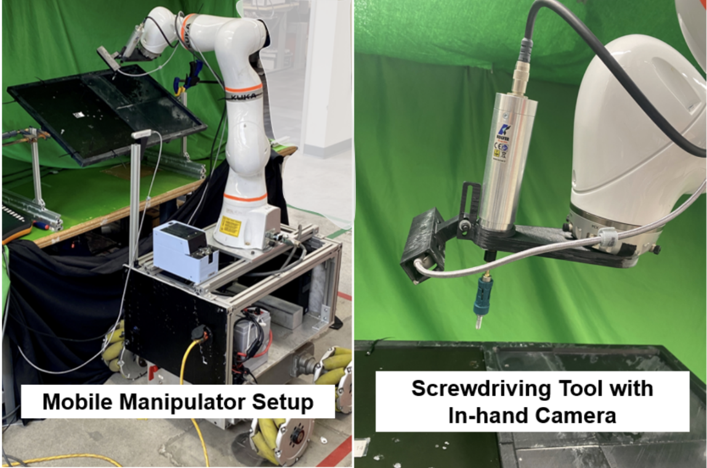
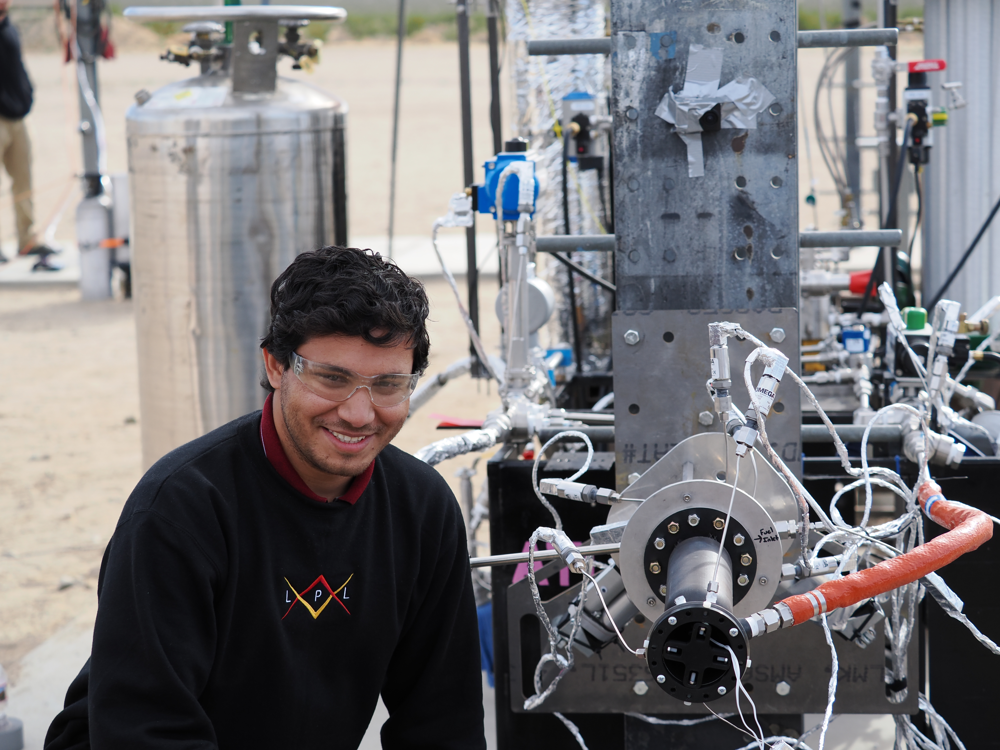
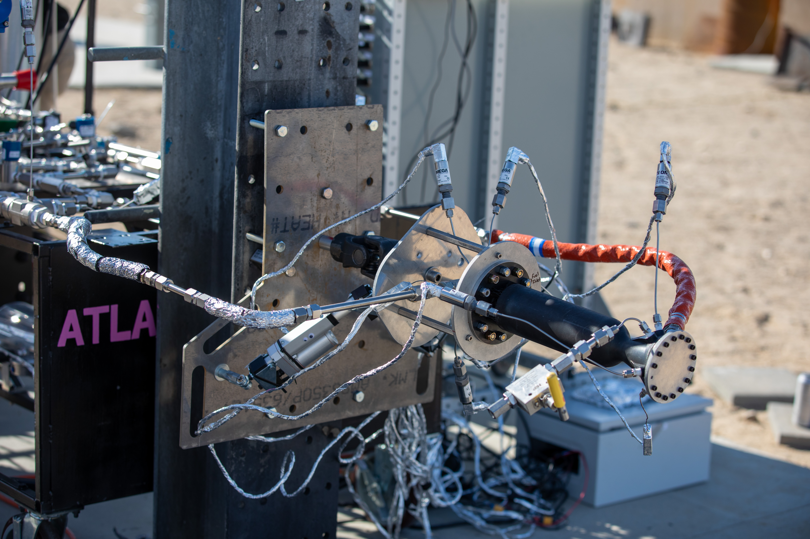
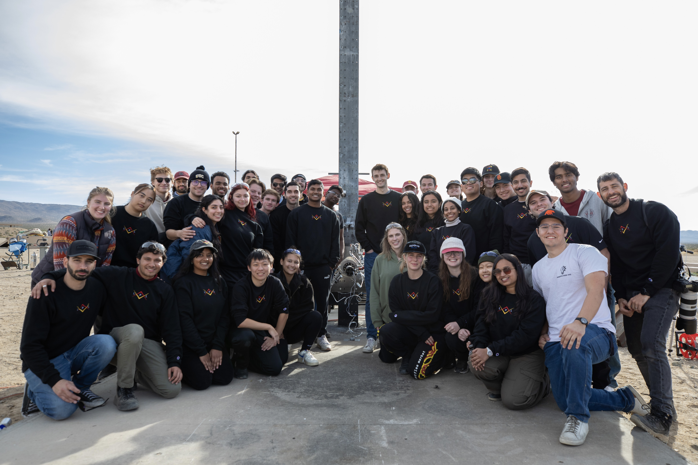
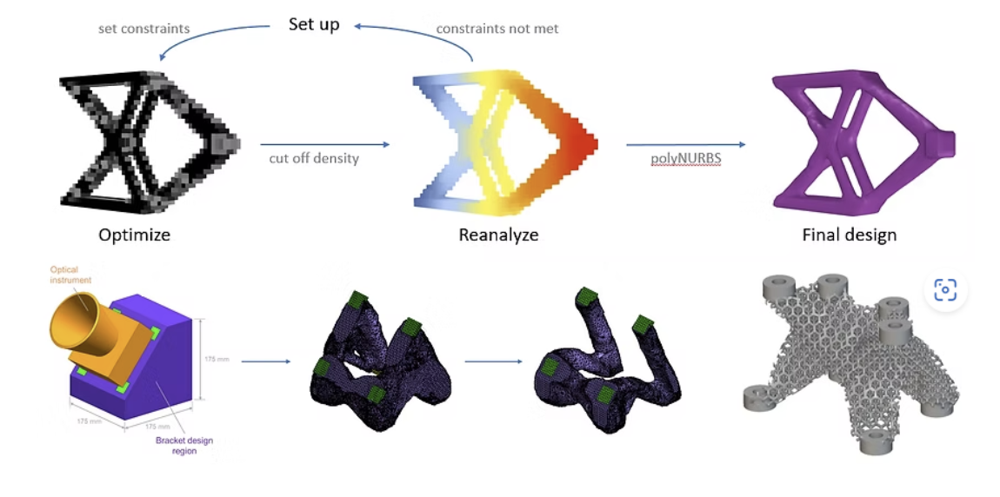
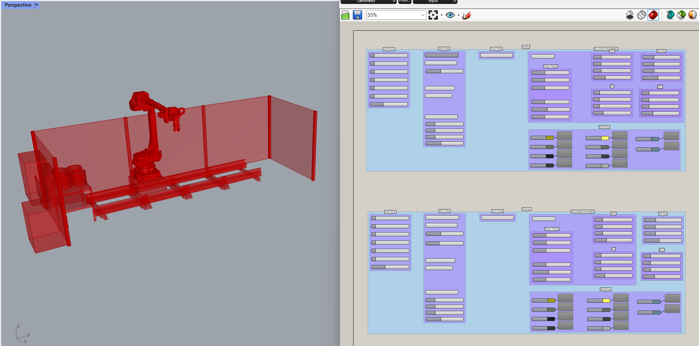
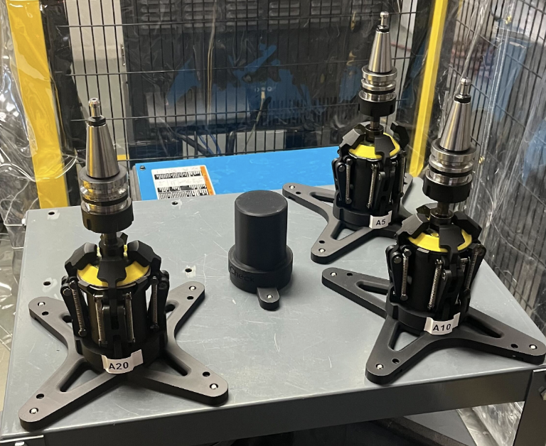
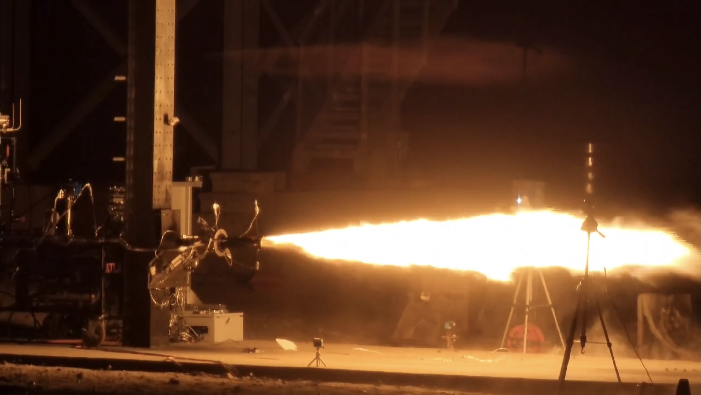

Engineer bridging customer-facing robotics deployment with hands-on aerospace and mechanical engineering — from pre-sales feasibility through post-activation support.
I'm a Solutions Engineer at GrayMatter Robotics, where I own the full customer lifecycle for robotic automation cells — pre-sales technical analysis and ROI validation, proof-of-concept and workshop-driven process development, on-site deployment, and post-activation support and account expansion.
My background is in aerospace and mechanical engineering, with hands-on depth in system development, system integration, and parametric CAD. I'm comfortable translating ambiguous customer requirements into de-risked, scalable automation solutions, and operating across engineering, customer-success, and technical sales functions without living inside a sales quota.
Experience
Feb 2024 – Present
Robotics Engineer II, Solutions Engineering Team
GrayMatter Robotics (GMR)
Pre-Sales & ROI Analysis
Served as the lead technical resource on sales calls, fielding in-depth engineering questions and validating that proposed robotic solutions met customer ROI and payback targets before proposal sign-off.
Presented proof-of-concept results and built customer-specific proposals, translating technical feasibility into a clear business case for automation investment.
Technical Discovery & Feasibility
Partnered directly with customers to capture process requirements, throughput targets, cycle-time constraints, and existing factory layout, ensuring proposed cell designs matched real production conditions.
Analyzed robot reach, achievable performance, and part coverage to de-risk projects ahead of contract commitment, surfacing layout and cycle-time issues before they became costly change orders.
Parametric CAD Tooling
Designed and built a fully parametric CAD tool (Rhino/Grasshopper) that rapidly configures robotic cell layouts and auto-extracts key deployment dimensions plus reach and coverage study parameters — cutting design turnaround from 5 days to 8 hours and standardizing designs across the Solutions Engineering team.
Post-Activation Support & Account Expansion
Own post-activation support for live customer cells, providing remote and on-site troubleshooting and operator support to protect production uptime after handoff.
Lead expansion engagements with existing accounts — adding new SKUs into already-deployed cells and scaling installations from single-cell to multi-cell lines — growing automation footprint within the existing customer base.

Feb 2024 – Present
Robotics Engineer, Systems & Applications Team
GrayMatter Robotics (GMR)
Process & Application Development
Led process development for robotic grinding applications and deployed the systems on customer sites to process industrial battery storage units, fire truck and ambulance chassis, and aircraft engine lipskins.
Led process development for single- and dual-robot sanding, paint-removal, and polishing applications, deploying systems for fire trucks, cement mixer drums, luxury cabinetry, wood/granite countertops, and aircraft interior cabinetry.
Hardware & Software Integration
Developed and deployed an automated tool-changer enabling dynamic swapping between grinding and sanding processes within a single part cycle.
System Calibration
Performed intrinsic/extrinsic camera (Zivid, LMI, Creaform, Leica), turntable, force-compliant device, and tool-center-point calibration at customer sites and in-house, achieving sub-1.5mm system tolerance.
Customer Relations & Workshops
Organized and led customer workshops, weekly sync meetings, and pre-activation reviews to set and meet expectations for each robot cell before deployment.
Collaborated with customers to integrate cell(s) into their production lines, then trained operators and provided remote assistance to sustain solution uptime.
Developed a modular pneumatic vacuum suction gripper (5g–9kg payload) for an articulated collaborative robot (Kuka IIWA-7), with Arduino–ROS interfacing and a two-robot RealSense-based experimental setup.
Engineered a remote-operated precision screwdriver with RealSense vision and ultrasonic sensing for a 20% increase in depth-sensing accuracy, including a Mask-RCNN model for threaded-hole detection.
Engineered a remote-operated high-pressure vacuum lid that improved automated composite debulking vacuum generation by 30%.


Sept 2022 – Jan 2024
Responsible Engineer, Propulsive Landing Hopper
USC Liquid Propulsion Laboratory (LPL)
Led a team of 20 graduate students to engineer USC's first liquid-fueled propulsive landing hopper.
Spearheaded Thrust Vector Control technology to gimbal a 675 lb. additively manufactured re-gen engine.
Designed, manufactured, and tested mechanical systems for LPL's first Ker-Lox static-fire test stand, including a cooling/filtering system for the Data Acquisition box and an overhaul of cryogenic-rated high-pressure valves.



Oct 2021 – Aug 2022
Research Intern, 357H: Materials Development & Manufacturing Technology
NASA Jet Propulsion Laboratory (JPL)
Implemented lattice optimization and thermo-structural analysis of thermal brackets with anisotropic material, increasing thermal & structural performance of an optical instrument support structure by 20%.
Fabricated topology-optimized satellite structural components using Laser Powder Bed Fusion.

Featured Projects

Parametric Cell Configurator
A fully parametric CAD tool (Rhino/Grasshopper) that generates robotic cell layouts and auto-extracts deployment dimensions plus reach/coverage parameters — cutting design turnaround from 5 days to 8 hours.
GrasshopperParametric DesignReach & Coverage

Automated Tool-Changer System
Developed and deployed a tool-changer enabling dynamic swapping between grinding and sanding processes within a single part cycle, expanding cell capability without added hardware footprint.
Robotic ProcessHardware IntegrationDeployment

Propulsive Landing Hopper
Led a 20-person team as Responsible Engineer on USC's first liquid-fueled propulsive landing hopper, spearheading Thrust Vector Control of a 675 lb. re-gen engine.
Robotic Mobility: Built a quadruped to traverse obstacle-induced terrain with minimal control system
KLS Gogte Institute of Technology
2018 – 2022
Bachelor of Engineering, Mechanical Engineering — GPA 3.65
Final Thesis (with NASA JPL): Topology & Lattice Multi-Physics Optimization of next-generation spacecraft structural components
Publications
Omey M., Santosh N., Rohin L., "Physics-Informed Learning to Enable Robotic-Screwdriving Under Hole Pose Uncertainties," IEEE International Conference on Intelligent Robots & Systems (IROS), 2023.
Rohin L., "A Prototype Aerospike: Another Fish in the Sea," ASME International Mechanical Engineering Congress & Exposition (IMECE), Vol. 4: Advances in Aerospace Technology, 2020.
Honors & Awards
Demonstrated Thrust Vector Control of a 650 lb. liquid bi-propellant engine, making USC LPL one of two collegiate teams in the world to thrust-vector a rocket engine (Dec 2023); featured in the IAF newsletter (Feb 2024).
Smart Robot Assistant for Safe Tool Hand-Over featured in IEEE Spectrum (March 2023).
Awarded Best Student in Mechanical Engineering upon receiving Bachelor's degree (April 2022).
Let's talk about your next automation project.
Open to Solutions Engineer, Systems Engineer, and Manufacturing Engineer roles — in robotics, automation, and adjacent hardware/software fields.